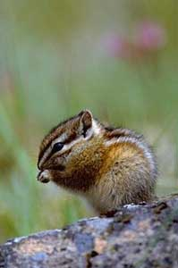
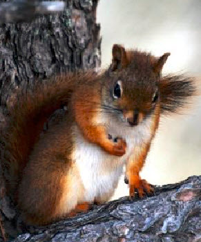
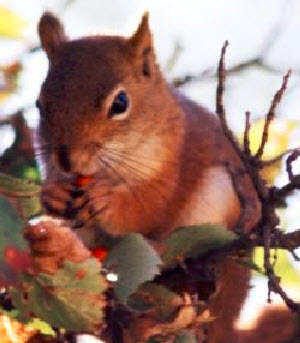
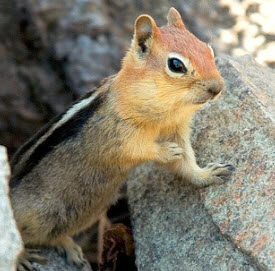

|
Citations Assignment
|
|  |
 |
|  |
 |
Sources
National Park Service. (n.d). Townsends Chipmunk. [Photograph]. Retrieved from http://www.nps.gov/lewi/planyourvisit/wildlife-refuges.htm
National Park Service. (n.d). Itchy Red Squirrel. [Photograph]. Retrieved from http://www.nps.gov/media/photo/gallery.htm?id=004C4C77-155D-4519-3E059D038812756A
National Park Service. (n.d). Red Squirrel in Sunny Tree Branches. [Photograph]. Retrieved from http://www.nps.gov/media/photo/gallery.htm?id=004C4C77-155D-4519-3E059D038812756A
National Park Service. (n.d). Golden-Mantled Ground Squirrel. [Photograph]. Retrieved from http://www.nps.gov/lavo/naturescience/animals.htm